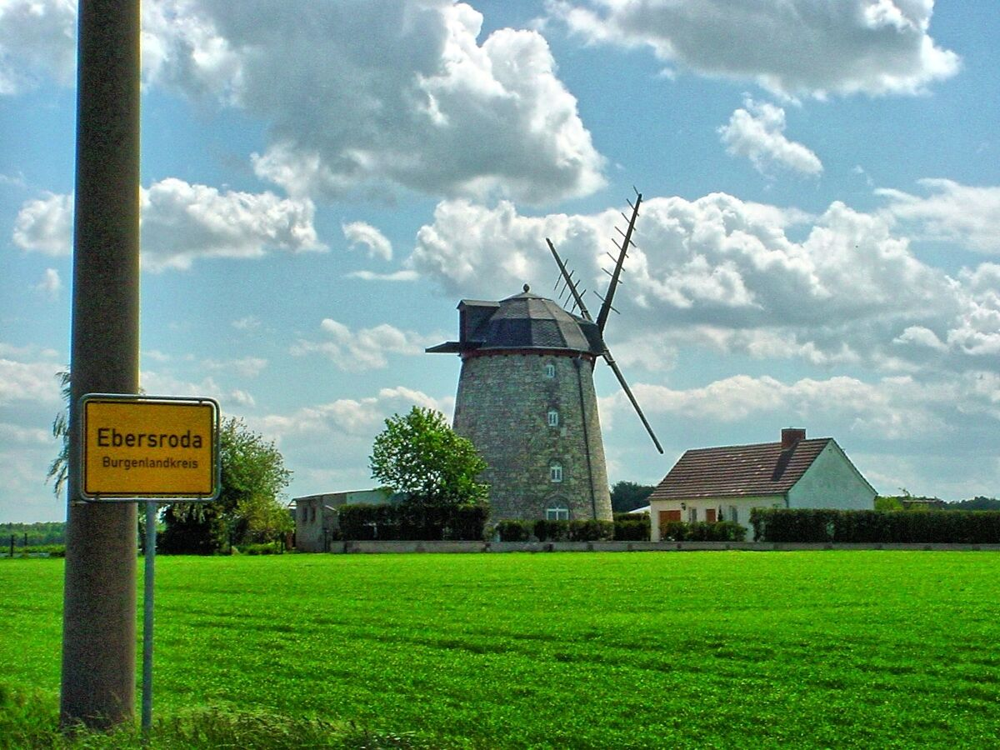
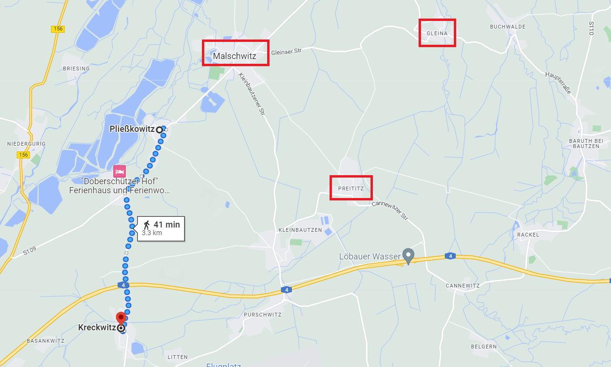
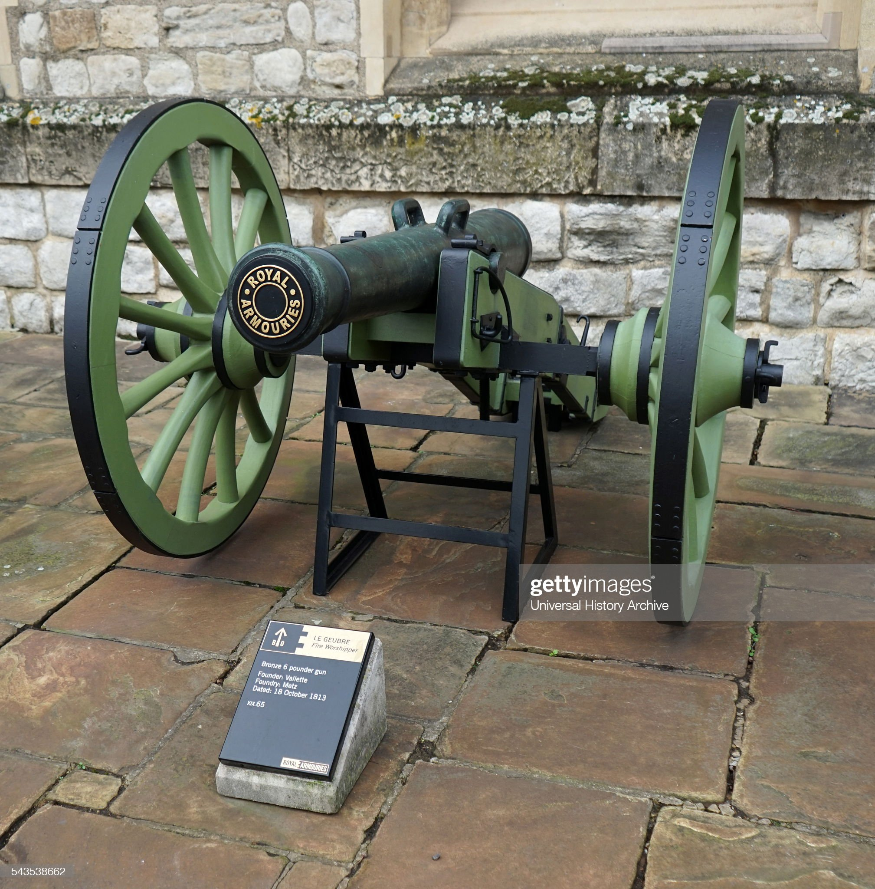
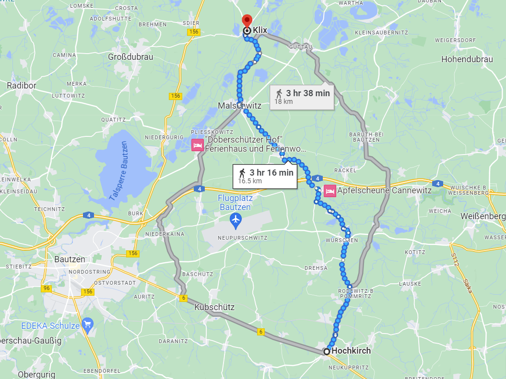
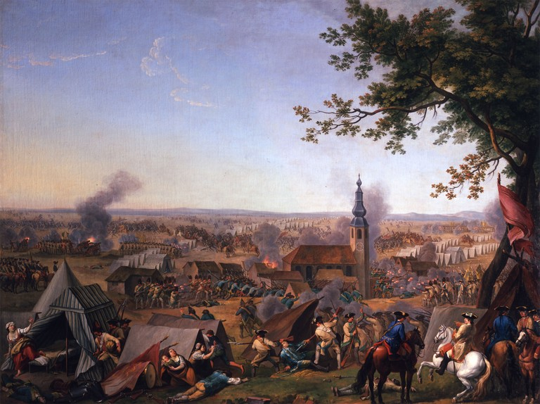
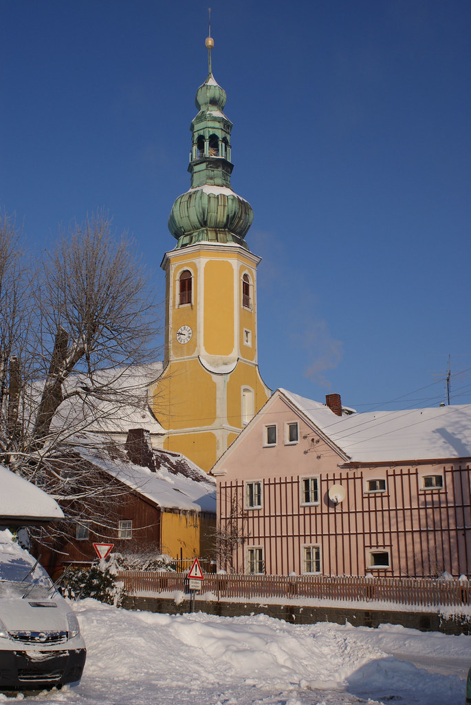
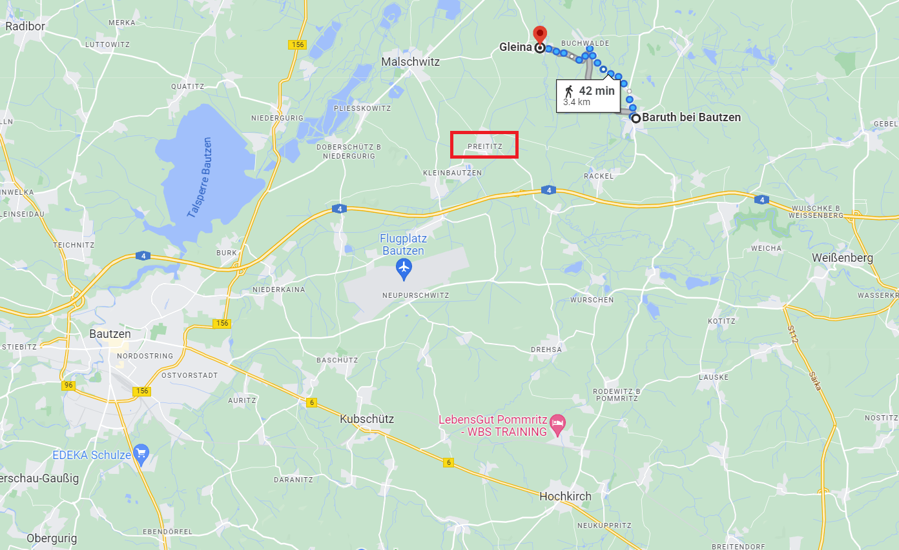

바우첸 전투 (4) - 높은 교회만 보고 간다
게시: 2023-05-01T06:30:53+09:00
바클레이가 털어놓은 이야기는 뮈플링을 깜짝 놀라게 하기에 충분했습니다. 원래 바클레이 휘하에 있던 병력 1만5천 중에서 1만을 여기저기 쪼개에 지원 병력으로 다 보내버렸기 때문에, 당장 글레이나를 지키기 위한 병력은 5천 정도 밖에 없다는 것이었거든요. 이건 이해가 가지 않는 일이었습니다. 바로 2일 전인 19일에 북쪽에서 내려오는 프랑스군과 격돌을 벌이고도 아무 대책없이 병력을 분산시켰다는 소리였으니까요. 이건 아마도 전체 전선에서 맹렬한 전투가 벌어지는데도 바클레이가 맡은 말슈비츠-글레이나 전선에서는 아무런 움직임이 없었기 때문에 방심했던 것이 이유일 수 있습니다. 사실 9만에서 9만5천 정도였던 전체 연합군에서 1만5천이라는 병력은 상당한 규모였으니, 그 병력을 그대로 놀려두기가 아까웠을 것입니다. 바클레이가 누구의 명령을 받고 그렇게 글레이나 방면의 병력을 다른 곳으로 분산 배치했는지는 불분명합니다만, 바클레이에게 그런 명령을 내릴 사람은 사실 짜르 한 명 외에는 없긴 했습니다. 아무튼 문제는 그런 책임 소재가 아니었습니다. 당장 30분 후면 이 글레이나 언덕에 프랑스군 2~3만이 밀어닥칠 판인데, 그걸 막을 방법이 전혀 없었습니다.

(현재 글레이나 인근의 풍차입니다. 바우첸 전투 당시에도 글레이나 언덕에는 풍차들이 여럿 있었다고 합니다. 글레이나는 지금도 인구 1천을 간신히 넘는 작은 마을입니다.) 바클레이는 당황한 뮈플링에게 당장 말을 달려 가장 가까운 부대인 블뤼허의 프로이센군에게 도움을 청하도록 명령했습니다. 블뤼허의 프로이센군도 병력이 넘쳐나는 것은 아니었습니다. 블뤼허가 맡은 전선은 크렉비츠(Kreckwitz)에서 도버쉬츠(Doberschütz)를 거쳐 플리스코비츠(Pließkowitz)까지 이어지는 약 3km가 넘는 구간이었는데, 그걸 지키는 병력은 1만8천이었습니다. 따라서 원래 바클레이가 맡은 전선과 비슷한 규모였고, 프랑스군의 공격이 집중적으로 이루어지고 있었으니 바클레이 쪽보다 압박이 훨씬 심했습니다. 특히 니더구리쉬의 다리는 매우 중요했습니다. 술트 휘하의 프랑스군은 일부가 그 다리를 건너 키페른 언덕 아래까지 육박해있는 상황이었지만 프랑스군이 확보한 슈프레 강 동쪽의 교두보는 그다지 넓지 않아서 술트의 병력 대부분의 아직 니더구리쉬의 다리를 건너지 못한 상황이었습니다. 그 다리를 이용한 프랑스군의 도강을 제압하기 위해서는 키페른을 비롯한 강변 언덕에 늘어선 연합군 포병대가 꼭 버텨야 했습니다.

(5월 21일 블뤼허의 프로이센군이 맡은 전선입니다. 그 북동쪽에 말슈비츠-글레이나가 있고, 그 아래에 프라이티츠(Preititz)가 보입니다. 프라이티츠는 나중에 매우 중요한 위치가 되니 잘 봐두십시요.) 뮈플링은 헐레벌떡 말을 달려 크렉비츠 언덕 위의 블뤼허 사령부로 돌아가, 이 긴박한 소식을 알렸습니다. 다만 막상 사령부에 들어서보니, 블뤼허의 사령부에서는 언제나 그렇듯 많은 장교들이 함께 듣고 있는 상황이라 감히 바클레이 휘하에 5천 밖에 없다는 이야기를 그대로 전하지 못하고 그저 '프랑스군 2~3만의 진격에 대해, 바클레이가 프라이티츠로 후퇴할 것을 고려 중'이라는 부분만 전달했습니다. 그러자 블뤼허와 그나이제나우는 '그게 말이 되는가, 러시아군이 그 정도로 겁장이는 아니다'라며 그 말을 믿으려 하지 않았습니다. 이어서 뮈플링은 블뤼허의 프로이센군도 후퇴하는 것이 어떻겠는가를 조심스레 암시했는데, 이는 프라이티츠가 함락될 경우 블뤼허의 프로이센군은 앞뒤가 모조리 프랑스군에게 포위되는 꼴이 되기 때문이었습니다. 실은 그것이 나폴레옹이 원하는 바로 그 상황이었습니다. 그제서야 사태의 심각성을 깨달은 블뤼허와 그나이제나우는 부랴부랴 지원군을 바클레이 방면으로 급파했습니다. 그러나 프로이센군도 지원해줄 병력이 많지 않았습니다. 오전 10시, 블뤼허는 먼저 원래 러시아군 소속이지만 프로이센군으로 파견나와 있던 6파운드 포병대 24문을 모조리 프라이티츠 진입로 쪽으로 파견했습니다. 이어서 뢰더(Friedrich Erhard von Röder)의 근위 연대를 프라이티츠로 파견했지만 놀랍게도 이 연대가 블뢰사(Blösa) 시냇물을 따라 프라이티츠로 접근한 뒤에 보니, 놀랍게도 프라이티츠에는 이미 프랑스군이 득실거리고 있었습니다. 블뤼허 최대의 위기 순간이었습니다. 대체 어떻게 된 것일까요?

(1813년 제작된 6파운드 포입니다. 당시 사용되던 모든 포 중에서 가장 가벼운 축에 속했습니다만, 그래도 머스켓 소총에 비하면 사정거리에 있어서나 밀집 보병대에 대한 제압 능력에 있어서나 비교가 되지 않았기 때문에 이것 하나가 있는 것과 없는 것의 차이는 매우 컸습니다.)
여기서 시선을 다시 네의 프랑스군 쪽으로 옮겨 보겠습니다. 베르티에를 통한 나폴레옹과의 교신에 어려움을 겪고 있던 네는 21일 아침 7시까지도 어디를 목표로 진격하면 되는지에 대한 구체적인 지시를 받지 못해 답답해 하고 있었습니다. 그러나 지시를 받지 못했다는 이유로 가만히 있었다면 네가 나폴레옹의 원수 반열에 오르지는 못 했을 것입니다. 그는 나폴레옹의 지시를 받기 전이었지만 해가 뜨자 일단 연합군의 우익을 우회하는 방향으로 남하를 시작했습니다. 잠정적인 목표는 일단 호흐키어쉬(Hochkirsh)였습니다. 잠정적인 목표를 호흐키어쉬로 정한 것은 당대의 네의 참모이자 당대의 밀덕 조미니였는데, 그가 목표를 이렇게 정한 것은 실제로 호흐키어쉬를 함락시키려는 것이 아니었습니다. 당시 네의 군단이 가진 지도도 나폴레옹이 가진 것 못지 않게 낡고 부정확한 것으로서, 1758년 호흐키어쉬전투 때 프리드리히 대왕이 썼던 지도와 동일한 것을 쓰고 있었습니다. 나폴레옹도 그런 지도로는 눈 앞에 보이는 마을을 지도 상에서 찾지 못해 현지인 마부를 옆에 세워두고 물어봐야 했으니 네와 그의 지휘관들도 마찬가지였습니다. 그런데 호흐키어쉬(Hochkirsh, 높은 교회라는 뜻)에는 그 이름 그대로 높은 교회 탑이 있었기 때문에, 15km 정도 떨어진 클릭스(Klix)에서도 그 탑 끝부분이 보였습니다. 그러니까 네는 호흐키어쉬의 교회 탑을 일종의 등대처럼 사용했던 것입니다. 다만 21일 당일에는 낮은 먹구름이 잔뜩 끼어 있어서, 그 교회 탑은 잘 보이지 않았다고 합니다.

(호흐키어쉬까지의 직선 거리인 15km는 전함의 꼭대기인 약 50m 높이에서 수평선 위의 낮은 물체가 넉넉히 보이는 거리입니다. 따라서 평지에 선 성인 남자가 호흐키어쉬의 높은 교회 탑은 어렵지 않게 볼 수 있었을 것입니다.)

(호흐키어쉬 전투란 7년 전쟁 중에 일어난 1758년 10월 14일의 전투를 말합니다. 당시 8만의 오스트리아군이 프리드리히 대왕의 프로이센군 3만5천을 호흐키어쉬에서 급습한 전투로서, 프리드리히 대왕은 여기서 1만에 가까운 병력을 잃고 패퇴했습니다. 다만 오스트리아군은 그 전과를 적극적으로 확대하지 않아서, 프리드리히 대왕은 겨우내 전세를 추스릴 수 있었습니다. 그림 속 교회의 높은 탑은 그로부터 55년 뒤에도 인간들의 부질없는 싸움질을 묵묵히 내려다 보게 됩니다.)

(지금도 남아있는 호흐키어쉬의 교회 탑입니다. 저 호흐키어쉬 전투 그림에 보이는 것과 동일하게 생겼습니다.) 나폴레옹의 목표는 연합군 우익이 아니라 좌익이라고 굳게 믿고 있던 짜르가 얼마나 바보 같은 짓을 저지른 것인지는 네가 21일 아침 명확하게 증명을 해주었습니다. 대부분의 병력을 여기저기 나눠주고 약해진 바클레이는 서둘러 남동쪽으로 3~4km 떨어진 바루트(Baruth)로 후퇴하는 것 외에는 방법이 없었습니다. 거기라도 지키고 있어야 연합군의 후퇴로인 바이센베르크(Weißenberg) 쪽으로의 도로를 확보할 수 있었기 때문이었습니다. 네는 바클레이가 비워놓은 글레이나 언덕의 풍차들을 9시 반 경에 매우 손쉽게 점령했고, 로리스통도 바로 그 동쪽인 부흐발더(Buchwalde)를 점령하고 바로 남쪽인 바루트의 바클레이를 위협했습니다.

(글레이나에서 바루트까지의 거리입니다. 완전 무장하고 천천히 걸어도 1시간이 걸리지 않는 거리입니다.) 나쁜 일은 몰려 다닌다지만 좋은 일도 그러는 모양인지, 네를 답답하게 하던 문제, 즉 나폴레옹과의 교신도 이 때 바로 해결되었습니다. 10시 즈음해서, 나폴레옹의 명령서가 전진하는 네의 뒤를 쫓아 글레이나까지 도착했던 것입니다. 그 명령서에는 오전 11시까지 프라이티츠를 점령한 뒤 적의 우익을 공격하라고 연필로 짧게 적혀 있었습니다. 이건 글자 그대로 누워서 떡먹기 같은 쉬운 임무였습니다. 5천 병력을 거느린 바클레이가 숨을 고르고 있던 바루트를 11시까지 점령하라는 것도 매우 쉬웠을 텐데, 바루트처럼 고작 3~4km 의 거리에 있던 프라이티츠에는 지키는 연합군 병력이 아예 없었기 때문이었습니다. 이렇게 모든 것이 완벽한 상황에서 일이 잘못되는 것은 불가능해보였습니다. 그러나 그 불가능한 일이 발생하고 맙니다. Source : The Life of Napoleon Bonaparte, by William Milligan Sloane Napoleon and the Struggle for Germany, by Leggiere, Michael V
https://en.wikipedia.org/wiki/Battle_of_Hochkirch